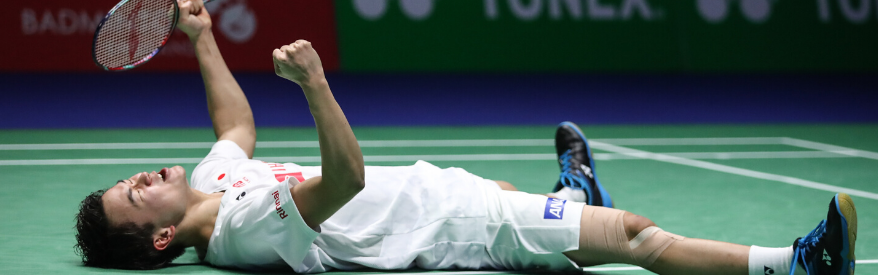

Watching Movie
I found that watching movie is interesting when i was 14 years old. The first movie that amazed me was Pacific Rim, for me, it was the best Sci-fi movie ever made. But the other good thing from watching movie is, you can learn certain things that delivered in it, implicitly or explicitly. But remember, life is not a movie, why? because everything that we see is scripted.

Cooking
Since my mother is sooo good at cooking, i learn as i watched her cook, almost everytime. And lately, i realized that cooking is so entertaining yet challenging. Because every little thing you do does does affect your cooking. And i also think that when i cook, i feel like i could improvise with any ingredient arounds. But if it tastes bad, im pretty sure you will still like it because that is the result of your effort.

Playing Badminton
Im sure that im not so good at it, but for me, it is quite a fun when you play it with your friend. When you play with them, you dont have to be so serious about it, because whether we win or lose, we will gain nothing but sweat, but the most important is, we have to keep the game fair and played as it should be.